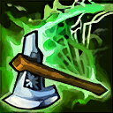
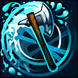
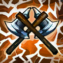

起手裝備
 紅水晶
紅水晶

上路改三相、錫柯、破船、史特拉克、狂霸血甲，配大絕追擊與邊線；防裝仍按威脅替換。


五件成裝與鞋子分開列示；起手與核心是購買路線，不是額外佔用的成裝欄位。鞋子完成時機仍依對線壓力與回城金錢調整。


符文改爆破、回春、過度生長與光輝披風，強化分推及鬼步追擊；征服者保留。


歐拉夫：閃現避開關鍵技能，鬼步延長追擊與拉打，配合技能循環而非無視隊友單獨深追。
加點優先：Q > E > W
保留Q > E > W；優先提升逆流投擲。15級分配已核對，每個基本技能四點，大絕於5、9、13級升級。

隨已損生命提高攻速與物理吸血，生命較低時長戰能力更強；仍須防範爆發與重創。

投擲戰斧造成傷害與緩速；撿回戰斧可大幅縮短冷卻，形成持續追擊循環。
有後續版本調整的項目以較新數值為準；未列出者不代表完整技能成長表。

主動提高攻速並獲得依已損生命增加的護盾；物理吸血來自被動，不是二技額外給予吸血。
向目標衝前並造成真實傷害；未擊殺目標時自己也受到真實傷害。普攻可縮短此技能冷卻。
被動提高物防與魔防；主動解除控制並取得免控與額外物攻，可在受控時施放。普攻或三技命中敵方英雄能延長持續時間，免控不等於免傷。
有後續版本調整的項目以較新數值為準；未列出者不代表完整技能成長表。
二技提供攻速與護盾，被動才提供物理吸血；三技未擊殺會反傷自身，普攻或三技命中英雄可延長大絕免控。
1技 → 普攻 → 3技 → 撿回再投 → 普攻
戰斧命中後沿著斧頭方向追擊，撿回可縮短冷卻，持續穿插真實傷害。
2技 → 1技 → 普攻 → 3技
生命降低時開二技取得護盾與攻速，再靠被動物理吸血和普攻延長作戰；普攻縮短三技冷卻，使用三技前要預留未擊殺時的反傷。
4技 → 1技 → 3技 → 普攻 → 2技
確認敵方控制即將命中時開大，直線追擊後排並持續撿斧。
前期 Q 命中後撿斧縮短冷卻，血量越低越強但不要低估爆發斬殺線。
三相之力 → 錫柯的聚合之力 → 破船戰斧為主要成裝順序。上路改三相、錫柯、破船、史特拉克、狂霸血甲，配大絕追擊與邊線；防裝仍按威脅替換。
後期進場前先看隊友能否跟上；大絕結束後很怕被風箏，別孤軍深追。
關長戰輸出、卡蜜兒鎖定與厄薩斯拉扯會消耗免控時段，不能無視隊友位置一路追後排。
對局名單是機制與分路判斷，不代表固定勝率；需同時看雙方熟練度、兵線與陣容。
關長戰輸出、卡蜜兒鎖定與厄薩斯拉扯會消耗免控時段，不能無視隊友位置一路追後排。
上路改三相、錫柯、破船、史特拉克、狂霸血甲，配大絕追擊與邊線；防裝仍按威脅替換。
威脅名單參考同分路指南；較有利名單仍是機制推論，需連同兵線、打野與玩家熟練度判斷，並非台服勝率排名。
以下情境替換以本頁7.3b五件成裝為基準。同一格多項建議擇一；鞋子由二級升三級，主動裝另占成裝格。
高
觸發：敵方前排物防／魔防成形，或近身普攻威脅明顯。
狂霸血甲 → 黑色切割者
面對坦克／普攻威脅時，將狂霸血甲換成黑色切割者；先保留前三件核心，若替換核心位須確認目前死亡或輸出不足的原因。
面對坦克／普攻威脅時，將狂霸血甲換成黑色切割者；先保留前三件核心，若替換核心位須確認目前死亡或輸出不足的原因。
高
觸發：主要死亡原因是一輪集火，無法完成輸出或控制。
狂霸血甲 → 守護天使
面對爆發／暴擊多時，將狂霸血甲換成守護天使；先保留前三件核心，若替換核心位須確認目前死亡或輸出不足的原因。
面對爆發／暴擊多時，將狂霸血甲換成守護天使；先保留前三件核心，若替換核心位須確認目前死亡或輸出不足的原因。
高
觸發：敵方法術先手或持續魔法傷害成為主要威脅。
狂霸血甲 → 自然之力
面對魔法傷害多時，將狂霸血甲換成自然之力；先保留前三件核心，若替換核心位須確認目前死亡或輸出不足的原因。
面對魔法傷害多時，將狂霸血甲換成自然之力；先保留前三件核心，若替換核心位須確認目前死亡或輸出不足的原因。
高
觸發：魔法傷害與控制鏈影響生存或輸出。
鍍板鋼蓋 → 水星之靴
魔法傷害及可縮短的控制占主導時，整條改水星之靴→鎖鏈軍靴；韌性不能縮短擊飛。
魔法傷害及可縮短的控制占主導時，整條改水星之靴→鎖鏈軍靴；韌性不能縮短擊飛。
韌性不能縮短所有控制，例如擊飛；護盾與解控各有適用條件。
高
觸發：敵人持續回復令集火失敗。
狂霸血甲 → 生化龐克鏈鋸之劍
面對治療／吸血多時，將狂霸血甲換成生化龐克鏈鋸之劍；先保留前三件核心，若替換核心位須確認目前死亡或輸出不足的原因。
面對治療／吸血多時，將狂霸血甲換成生化龐克鏈鋸之劍；先保留前三件核心，若替換核心位須確認目前死亡或輸出不足的原因。
本頁校正版本：7.3b；校正日期：2026-10-15。
參考來源標示版本：7.3b
Tier、出裝、符文與對局是本站編輯建議，不是官方推薦或已驗證台服勝率。v118延續同日v117的逐路複核，針對來源缺口及數值衝突再核對；未宣稱所有技能已在手機內逐級實測。
評級理由：維持A；同分路公開指南參考為A。關長戰輸出、卡蜜兒鎖定與厄薩斯拉扯會消耗免控時段，不能無視隊友位置一路追後排。
WildRiftFire 參考攻略 ↗ · WildRiftFire 參考攻略 ↗ · Riot 官方資料 ↗
本頁延續2026/10/15 v117的巴龍路逐項複核，當前採用7.3b來源；來源只用作配置與機制參考，不等同官方推薦或台服即時勝率。
維持A；同分路公開指南參考為A。關長戰輸出、卡蜜兒鎖定與厄薩斯拉扯會消耗免控時段，不能無視隊友位置一路追後排。
歷史資料有後續調整時，以較新版本數值為準。
| 項目 | 調整前 | 調整後 |
|---|---|---|
| 基礎生命 | 690 | 660 |
| 每級生命成長 | 112 | 140 |
| 項目 | 調整前 | 調整後 |
|---|---|---|
| 額外物攻加成 | 120% | 105% |
| 項目 | 調整前 | 調整後 |
|---|---|---|
| 雙防提升 | 25 / 35 / 45 | 15 / 25 / 35 |